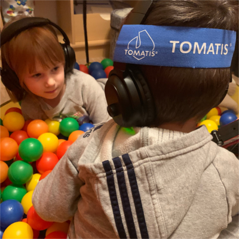
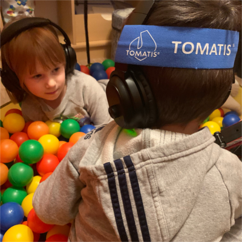

About Tomatis methode ®
Dr Alfred Tomatis. (1920-2001) was a French otolaryngologist and inventor. He received hos Doctorate in Medicine from Paris School of Medecine. His alternative medicine theories of hearing and listening are known as the Thomatis method or Audio-Psycho-Phonology (APP).

Alfred Tomatis grew up in a musical family in France. His father was an opera singer and he spent much of his childhood travelling with him and watching his opera performances from the wings. At an early stage, however, he and his parents decided he was not fit for the stage. So he went into medicine and eventually became an Ear, Nose and Throat physician. Soon after he began his practice his father began referring him opera colleagues vith vocal problems. He formulated the theory that many vocal issues were actually hearing problems. His theoty that “the voice does not produce what the ear does not hear”, is the landmark of his research and his method.
In his attempt to retrain his patients, he developed the Electic Ear, a device which utilizes electic gating, bone conduction transducers and sound filters to enhance the uppermost missing frequencies. The goal is to tonify the muscles of rhe middle ear in order to sensitize the listener to the missing frequencies. Tomatis began treating a number of other problems with the same methods, including reading problems, dyslexia, depression, severe schizophrenia and even autism. He found evidence that many of these problems result from a failure of communication, which has to do with listening and the ear.Tomatis theorized that the whole body is involved in the production of speech and language. He stated that reading, even silent reading is an activity of the ear. He recommended reading out loud, not only for children and by children, but also by adults, for 30 minutes a day. He claimed this not only stimulates the brain but is the best way to learn. His most controversial method attempts to lead autistic children to recognize and respond to their mother’s voice. The electric ear could simulate the sound of the mother’s voice heard in the uterus, and to lead the child gradually to accept and respond to her reql unfiltered voice.
On 1957, he submitted the “Tomatis laws” to the Academy of Sciences in Paris. These laws established that: The voice only contains what the ear can hear If the listening is modified, the voice is instantly and unconsciously modified too It is possible to transform the voice permanently through sound stimulation maintained for some time (law of remanence) In 1958, the first Electronic Ear was presented at the Universal Exhibition in Brussels, and earned him the Gold Medal for scientific research.


 
